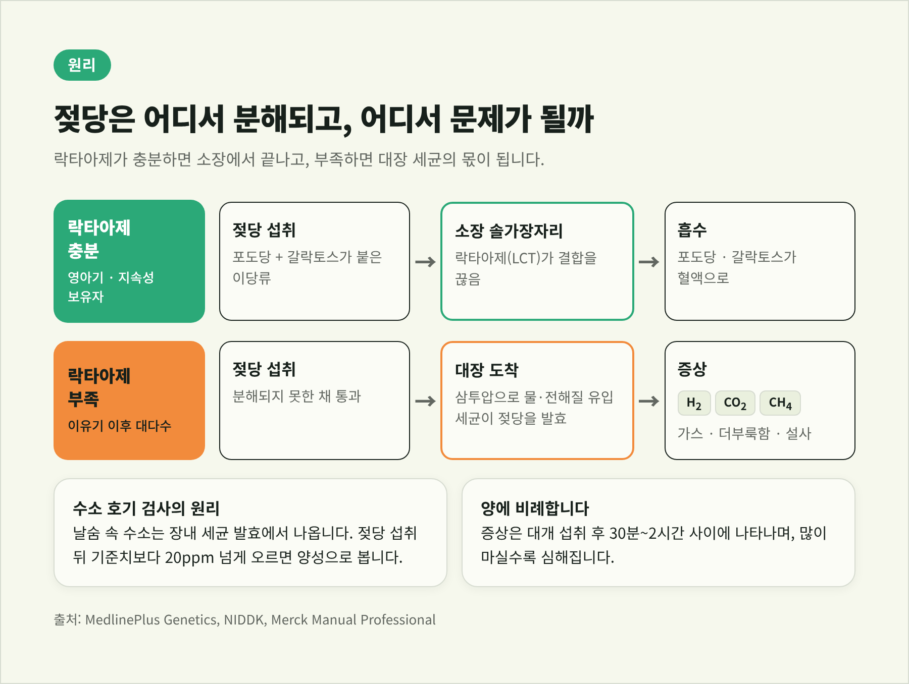
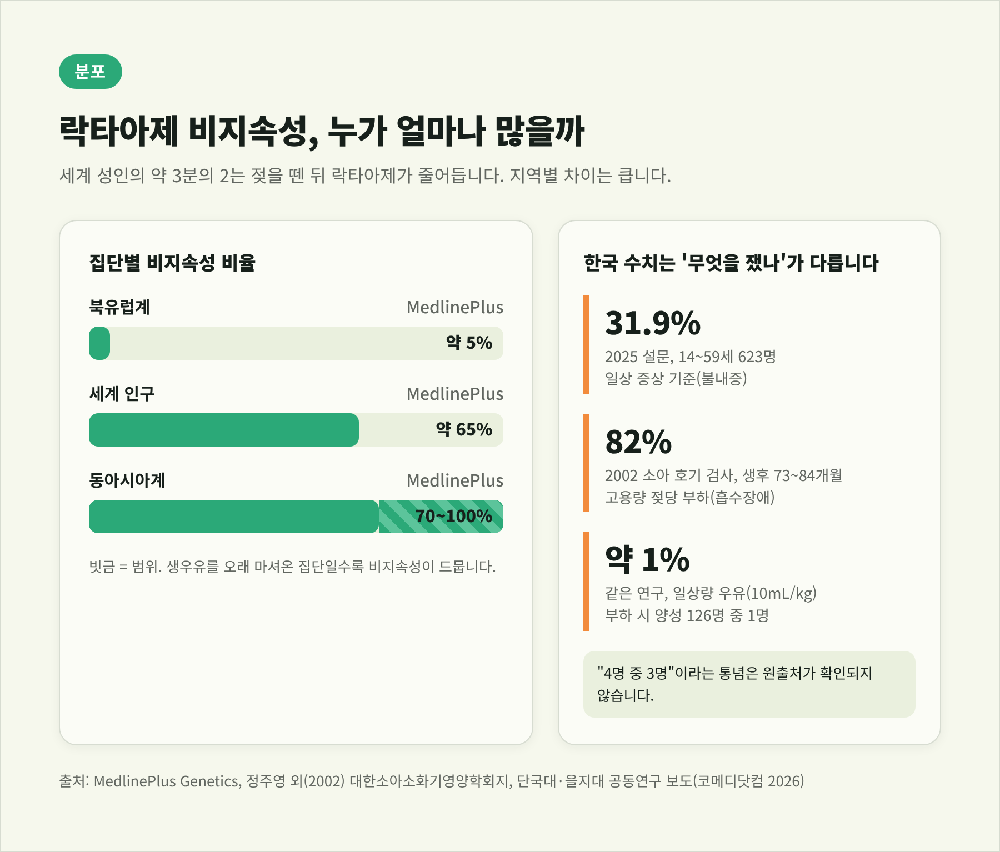
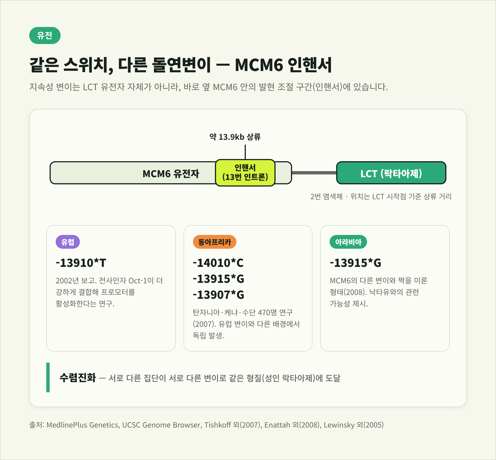
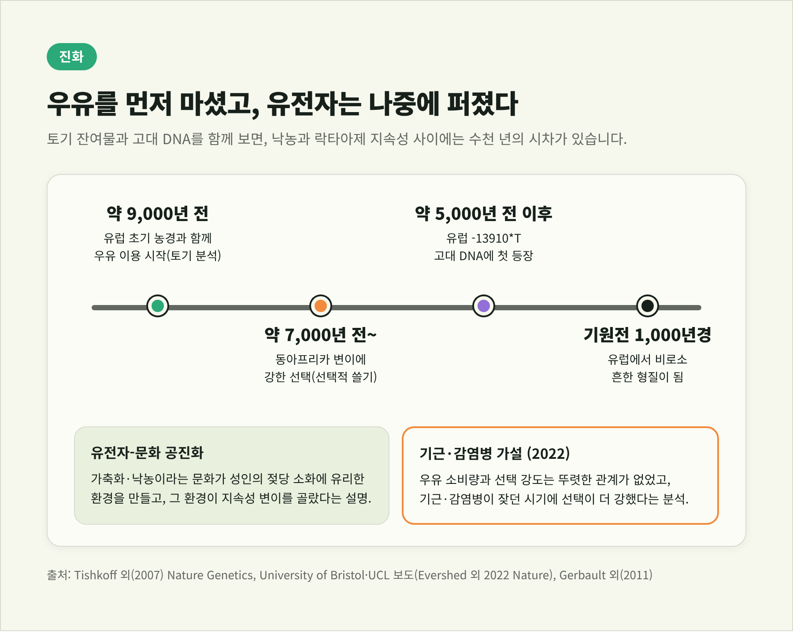
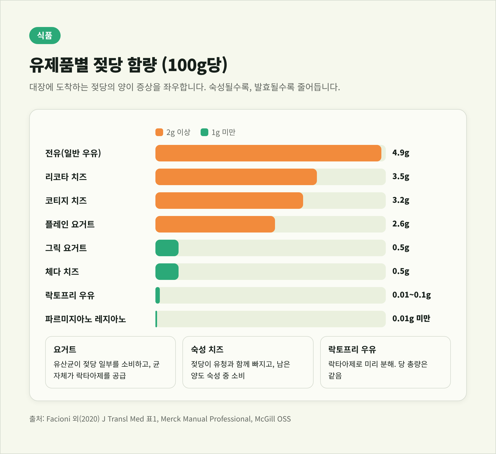

유당불내증 원리 — 어른 대부분이 우유에 배탈 나는 유전적 이유

이번 글에서는 유당불내증이 왜 생기는지, 그 원리를 효소와 유전자, 그리고 인류의 역사 순서로 정리해 보겠습니다. 우유를 마시면 배가 불편한 것은 몸에 이상이 있어서가 아닙니다. 오히려 인류의 기본값에 가깝습니다.
세 줄 요약
- 젖당은 소장의 락타아제(LCT 유전자)가 포도당과 갈락토스로 쪼개야 흡수됩니다. 대부분의 포유류와 사람은 젖을 뗀 뒤 이 효소가 줄어듭니다.
- 세계 인구의 약 65%, 동아시아계는 70~100%가 '락타아제 비지속성'입니다. 성인이 되어도 효소가 유지되는 쪽이 오히려 소수의 돌연변이입니다.
- 이 돌연변이는 유럽·동아프리카·아라비아에서 서로 다른 모양으로 따로 생겨났고, 낙농 문화와 함께 퍼졌습니다.
■ 먼저 용어부터 — 흡수장애와 불내증은 다릅니다
비슷해 보이는 말이 세 개 있습니다.
- 유당 흡수장애: 소장이 먹은 젖당을 다 분해하지 못하는 상태입니다. 증상이 없는 사람도 많습니다.
- 유당불내증: 젖당을 먹은 뒤 더부룩함, 설사, 가스 같은 증상이 실제로 나타나는 경우입니다. 미국 국립당뇨병·소화기·신장질환연구소(NIDDK)는 "증상이 있는 사람만 유당불내증"이라고 선을 긋습니다.
- 락타아제 비지속성: 영아기 이후 락타아제 생산이 줄어드는 유전적 형질입니다. 1차성 락타아제 결핍이라고도 부르며, 가장 흔한 원인입니다.
원인이 유전만은 아닙니다. 크론병·셀리악병 같은 소장 손상, 약물이나 수술 뒤에 생기는 2차성도 있습니다. 이 경우는 원인을 치료하면 회복되기도 합니다. 아주 드물게 태어날 때부터 효소가 거의 없는 선천성 결핍도 있습니다. 핀란드에서 가장 흔한데, 신생아 약 6만 명당 1명 수준입니다. 이 글이 다루는 것은 이 중 가장 흔한 첫 번째, 나이가 들며 효소가 줄어드는 경우입니다.
■ 락타아제는 젖당을 어떻게 쪼갤까
젖당(유당)은 포도당과 갈락토스가 붙어 있는 이당류입니다. 이 상태로는 장벽을 통과하지 못합니다.
2번 염색체의 LCT 유전자가 만드는 효소, 락타아제가 이 결합을 끊습니다. 효소는 소장 상피세포 표면의 미세융모, 이른바 '솔가장자리'에 박혀 일합니다. 쪼개진 포도당과 갈락토스는 곧바로 흡수돼 에너지가 됩니다.
갓난아기는 이 효소가 넉넉합니다. 젖이 유일한 식량이니 당연합니다. 문제는 젖을 뗀 뒤입니다. 대부분의 포유류는 이유기가 지나면 락타아제 발현을 끕니다. 사람도 대다수가 그렇습니다. 의학 교과서인 머크 매뉴얼은 "락타아제 결핍은 전 세계 대부분 성인의 일반적 상태"라고 적고 있습니다.
국내 연구도 이 흐름을 보여줍니다. 2002년 서울대 어린이병원 연구팀이 건강한 아이 129명에게 고용량 젖당을 먹이고 호기 수소를 쟀더니, 흡수장애 비율이 생후 25~36개월 7%에서 73~84개월 82%까지 올라갔습니다. 대략 72개월 이후 성인 수준에 가까워졌습니다.

■ 가스와 설사는 대장 세균이 만듭니다
락타아제가 부족해도 젖당은 사라지지 않습니다. 그대로 대장까지 내려갑니다. 여기서 두 가지 일이 동시에 벌어집니다.
첫째, 삼투압입니다. 분해되지 않은 당은 장 속 농도를 높여 물과 전해질을 끌어당깁니다. 그래서 묽은 설사가 납니다.
둘째, 발효입니다. 대장 세균에게 젖당은 반가운 먹이입니다. 세균이 이를 발효하며 수소, 이산화탄소, 메탄을 내놓습니다. 더부룩함, 방귀, 복부 팽만, 복통이 여기서 옵니다.
증상이 나타나는 시점은 출처마다 조금 다릅니다. 미국 국립의학도서관의 메드라인플러스는 섭취 후 30분에서 2시간, NIDDK는 "몇 시간 안"이라고 설명합니다. 양에 비례한다는 점은 같습니다. 많이 마실수록 심해집니다.
이 원리를 그대로 이용한 것이 수소 호기 검사입니다. 날숨 속 수소는 장내 세균의 발효에서 나옵니다. 젖당을 먹은 뒤 수소가 늘었다면, 소장에서 소화되지 못한 젖당이 대장에서 발효됐다는 흔적입니다. 머크 매뉴얼 기준으로는 젖당 50g을 먹고 2·3·4시간 뒤 날숨을 재서, 기준치보다 20ppm 넘게 오르면 양성으로 봅니다. 민감도는 78%, 특이도는 95% 이상입니다. 국내 연구들도 같은 20ppm 기준을 썼습니다.
■ 세계 인구 셋 중 둘은 '비지속성'입니다
메드라인플러스는 인류의 약 65%가 영아기 이후 젖당 소화 능력이 줄어든다고 봅니다. 2022년 영국 브리스톨대·UCL 공동연구 발표도 "성인의 약 3분의 2"라고 표현합니다.
분포는 고르지 않습니다. 북유럽계는 비지속성이 약 5%에 그칩니다. 반면 동아시아계는 70~100%에 이릅니다. 서아프리카, 아랍, 유대, 그리스, 이탈리아계에서도 매우 흔합니다. 공통된 규칙이 하나 있습니다. 발효하지 않은 생우유를 오래 마셔온 집단일수록 비지속성이 드뭅니다.
한국 수치는 조금 조심해서 읽어야 합니다. "한국인 4명 중 3명"이라는 말이 흔하지만, 원출처를 확인하기 어렵습니다. 2025년 단국대·을지대 공동연구팀이 14~59세 623명을 설문한 결과, 증상 기준 유병률은 31.9%였습니다. 단발성 사례를 빼면 약 30%입니다. 증상자의 약 74%는 2시간 안에 증상을 겪었고, 대부분 가볍거나 중간 정도였습니다.
통념과 설문 결과가 이렇게 어긋나는 데에는 '무엇을 쟀느냐'의 차이도 있습니다. 고용량 젖당을 먹이는 검사는 효소가 줄었는지(흡수장애)를 보고, 설문은 일상에서 불편을 느끼는지(불내증)를 봅니다. 앞서 소개한 2002년 소아 연구가 이를 잘 보여줍니다. 고용량 젖당 대신 몸무게 1kg당 10mL의 평범한 우유를 먹였더니 양성은 126명 중 1명, 약 1%에 그쳤습니다. 효소가 줄었다고 해서 우유 한 잔도 못 마시는 것은 아니라는 뜻입니다.

■ 우유를 소화하는 쪽이 '돌연변이'입니다
그렇다면 성인이 되어서도 우유를 잘 마시는 사람들은 무엇이 다를까요. 답은 LCT 유전자 자체가 아니라, 그 옆의 스위치에 있습니다.
LCT 바로 옆에는 MCM6라는 유전자가 있습니다. 이 유전자 안쪽에 LCT의 발현을 조절하는 구간, 이른바 인핸서가 들어 있습니다. 여기 염기 하나가 바뀌면 젖을 뗀 뒤에도 스위치가 꺼지지 않습니다. 한 쌍 중 하나만 물려받아도 효과가 나타나는 우성 형질입니다.
유럽에서 대표적인 변이는 -13910*T입니다. LCT 시작점에서 13,910염기 앞쪽, MCM6의 13번 인트론에 있습니다. 2002년 에나타(Enattah) 연구팀이 처음 보고했습니다. 2005년 발표된 한 연구는 이 T형 염기에 전사인자 Oct-1이 더 강하게 달라붙어 락타아제 프로모터를 활성화한다고 보고했습니다.
흥미로운 일은 아프리카에서 벌어졌습니다. 유럽형 변이로는 대부분의 아프리카 집단에서 나타나는 지속성이 설명되지 않았습니다. 2007년 사라 티시코프 연구팀이 탄자니아·케냐·수단 사람 470명을 조사했습니다. 그 결과 -14010C, -13915G, -13907*G라는 다른 세 변이가 지속성과 연결돼 있었습니다. 모두 -13910에서 100염기 안팎 거리, 같은 인핸서 구역에 모여 있습니다. 그러면서도 유럽 변이와도, 서로와도 다른 유전적 배경에서 따로 생겨났습니다.
아라비아반도에서는 -13915*G가 다른 짝과 함께 나타나는데, 연구진은 낙타유 섭취와 관련됐을 가능성을 제시했습니다.
서로 다른 지역에서 서로 다른 돌연변이가 같은 결과에 도달한 것입니다. 생물학은 이를 수렴진화라고 부릅니다. 박쥐와 새가 따로 날개를 얻은 것처럼, 목축민들은 따로 '어른의 락타아제'를 얻었습니다.

■ 낙농이 유전자를 바꿨다는 이야기, 그리고 반론
이 변이들이 퍼진 시기는 가축화·낙농의 역사와 겹칩니다. 티시코프 연구팀은 동아프리카 변이 주변의 긴 동일 구간을 근거로, 지난 약 7,000년 사이 강한 자연선택이 일어났다고 추정했습니다. 문화가 환경을 바꾸고, 바뀐 환경이 다시 유전자를 고른 것입니다. 이를 유전자-문화 공진화라고 부릅니다. 락타아제 지속성은 이 개념의 교과서적 사례로 꼽힙니다.
다만 최근 연구는 이야기를 조금 더 복잡하게 만들었습니다. 2022년 네이처에 실린 브리스톨대·UCL 연구는 유럽 554개 유적의 토기 조각 1만 3천여 개에서 우유 지방 흔적을 분석했습니다. 결과를 보면 유럽인은 약 9,000년 전 농경 초기부터 우유를 널리 썼습니다. 그런데 고대인 1,700여 명의 DNA를 보면 지속성 변이는 약 5,000년 전 이후에야 처음 나타나고, 기원전 1,000년 무렵에야 흔해집니다. 수천 년 동안 대부분 비지속성인 채로 우유를 먹었다는 뜻입니다.
연구팀은 우유 소비량 변화와 선택 강도 사이에서 뚜렷한 관계를 찾지 못했습니다. 대신 기근과 감염병이 잦던 시기에 선택이 더 강했다고 보았습니다. 평소엔 배탈 정도로 끝나던 우유가, 굶주리고 병든 몸에는 치명적인 설사로 이어졌을 수 있다는 해석입니다. 공동 저자 마크 토머스는 이를 "터보차지된 자연선택"이라고 표현했습니다.
예전 설명은 "우유를 마셨기 때문에 유전자가 퍼졌다"였습니다. 지금은 "우유를 마시는 사회에 위기가 닥쳤을 때 유전자가 퍼졌다"는 쪽으로 무게가 옮겨가고 있습니다. 두 견해는 배타적이라기보다 낙농이 무대를 깔고 위기가 속도를 올렸다고 읽을 수도 있습니다. 아직 결론이 난 문제는 아닙니다.

■ 요거트·숙성 치즈·락토프리 우유는 왜 괜찮을까
원리는 같습니다. 대장에 도착하는 젖당의 양을 줄이면 됩니다.
요거트는 유산균이 이미 젖당 일부를 먹어 치운 상태입니다. 게다가 살아 있는 균이 스스로 락타아제 역할을 하는 효소를 갖고 있습니다. 유럽연합은 "요거트의 살아 있는 배양균은 젖당 소화가 어려운 사람의 젖당 소화를 개선한다"는 건강 표시를 허용합니다. 조건은 불가리쿠스균과 서모필루스균, 두 요거트 균주가 그램당 1억 개(10⁸) 이상 살아 있는 것입니다.
숙성 치즈는 젖당이 거의 남지 않습니다. 치즈를 만들 때 젖당의 상당 부분이 유청과 함께 빠져나가고, 남은 양도 숙성 동안 미생물이 소비하기 때문입니다. 2020년 한 영양학 리뷰의 표를 보면 100g당 젖당이 전유 4.9g, 플레인 요거트 2.6g, 그릭 요거트 0.5g, 체다 0.5g입니다. 파르미지아노 레지아노와 그라나 파다노는 0.01g 미만입니다. 반대로 리코타(3.5g)나 코티지치즈(3.2g) 같은 생치즈는 젖당이 꽤 남아 있습니다. '치즈라서 괜찮다'는 아닌 셈입니다.
락토프리 우유는 공장에서 미리 락타아제를 넣어 젖당을 포도당과 갈락토스로 쪼갠 우유입니다. 당의 총량은 일반 우유와 같습니다. 그런데도 더 달게 느껴지는 데에는, 이렇게 생긴 포도당이 갈변 반응(마이야르 반응)을 더 빨리 일으켜 캐러멜 풍미를 더하기 때문이라는 설명이 있습니다. 국내 성인 증상자 35명을 대상으로 한 2016년 연구에서는 일반 우유를 락토프리로 바꾸자 날숨 수소 상승폭이 평균 103.7ppm에서 6.3ppm으로 떨어졌습니다.
양을 조절하는 것만으로도 차이가 납니다. NIDDK는 많은 사람이 젖당 약 12g, 우유 한 컵 정도는 증상 없이 또는 가볍게 넘긴다고 설명합니다. 국내 연구진도 조금씩, 차갑지 않게 마시고 발효 유제품을 활용하라고 권했습니다. 유제품을 완전히 끊으면 칼슘과 비타민 D가 부족해질 수 있다는 점도 함께 기억해 두시면 좋겠습니다.

■ 우유 알레르기와는 완전히 다른 문제입니다
둘을 혼동하는 경우가 많지만 기전이 전혀 다릅니다.
| 구분 | 유당불내증 | 우유 알레르기 |
|---|---|---|
| 원인 | 효소(락타아제) 부족 | 면역계가 우유 단백질을 공격 |
| 문제 성분 | 당(젖당) | 단백질(카제인 약 80%, 유청 약 20%) |
| 주로 나타나는 시기 | 아동기 후반~성인기 | 대개 생후 1년 안 |
| 증상 | 더부룩함, 가스, 설사 | 두드러기, 구토, 혈변, 드물게 아나필락시스 |
| 락토프리 우유 | 대안이 될 수 있음 | 단백질이 남아 있어 대안이 아님 |
미국 알레르기천식면역학회(ACAAI)에 따르면 우유 알레르기는 3세 미만 어린이의 2~3%에서 나타나고, 16세 전에 약 80%가 벗어날 수 있습니다. 알레르기는 생명을 위협할 수 있습니다. 젖당만 뺀 제품으로 해결되는 문제가 아니라는 점이 가장 중요합니다.
끝으로 한 가지만 덧붙이겠습니다.
우유를 마시고 배가 불편하다면, 그것은 결함이라기보다 인류 대다수가 공유하는 원래 모습입니다. 어른이 되어서도 우유를 소화하는 능력은 수천 년 전 일부 목축 사회에서 따로 생겨나 퍼진, 비교적 최근의 적응입니다.
"우유에 탈이 나는 것은 고장이 아니라, 인류의 기본 설정이다."
물론 이 글은 원리를 설명하기 위한 것이며 진단이나 치료를 대신하지 않습니다. 비슷한 증상은 다른 소화기 질환에서도 나타날 수 있으니, 증상이 지속되면 소화기내과 전문의와 상담하시길 권합니다. 우유 한 잔 앞에서 망설여진다면, 양을 줄이거나 요거트 한 컵으로 바꿔 보는 것부터 시작해도 충분합니다.
참고자료
- NIDDK — Lactose Intolerance
- MedlinePlus Genetics — Lactose intolerance
- MedlinePlus Genetics — LCT gene
- MedlinePlus Genetics — MCM6 gene
- Merck Manual Professional — Carbohydrate Intolerance
- Tishkoff et al. (2007) Convergent adaptation of human lactase persistence in Africa and Europe, Nature Genetics
- Enattah et al. (2008) Independent introduction of two lactase-persistence alleles, Am J Hum Genet
- Lewinsky et al. (2005) T-13910 DNA variant interacts with Oct-1, Hum Mol Genet
- Gerbault et al. (2011) Evolution of lactase persistence: an example of human niche construction
- UCSC Genome Browser — Lactase persistence 교육자료
- University of Bristol (2022) Famine and disease drove the evolution of lactose tolerance in Europe
- 정주영 외 (2002) 소아에서 호기내 수소검사를 이용한 유당 흡수장애 유병률
- 박선희 외 (2016) Efficacy of Lactose-free Milk in Korean Adults with Lactose Intolerance
- 코메디닷컴 (2026) 한국인 유당불내증 유병률 조사 보도
- ACAAI — Milk & Dairy Allergy
- Facioni et al. (2020) Nutritional management of lactose intolerance, J Transl Med
- McGill Office for Science and Society — Lactose-free milk
- FSAI — Probiotic Health Claims